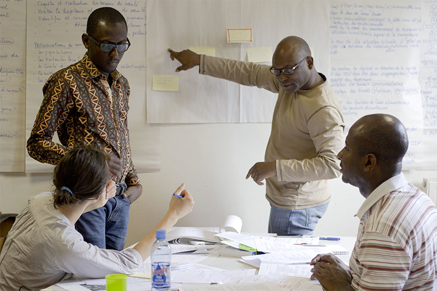

Formation et Insertion Professionnelle

Nous aidons chaque individu à développer des compétences interpersonnelles, éthiques et comportementales essentielles pour réussir dans la vie professionnelle et personnelle.
Des modules pratiques et adaptés aux réalités du marché de l’emploi permettent à nos bénéficiaires d’acquérir des savoir-faire techniques recherchés par les employeurs.
Nous accompagnons les jeunes dans la recherche et l’obtention de stages professionnels pour leur offrir une première expérience concrète en entreprise.
À travers un suivi personnalisé, des conseils en orientation et des ateliers pratiques, nous facilitons l’intégration des jeunes dans le monde du travail.
Education
Les enfants et les jeunes vulnérables sont au centre d’une éducation inclusive et citoyenne qui promeut leurs droits, favorise leur autonomie et les intègre pleinement dans leur communauté.
« Méthodologies préscolaires » : accompagnement pédagogique inspiré de la pédagogie Montessori, tout en mettant l’accent sur les besoins et les intérêts de chaque enfant, en partenariat avec des écoles maternelles associatives ou publiques.
« Parcours Citoyen » : parcours transformateur visant à renforcer la confiance, l’estime de soi, encourager l’esprit critique et stimuler l’engagement citoyen mené en partenariat avec les associations locales et les écoles publiques
« Club de Jeunes » : d’ancien·nes participant·es du Parcours Citoyen mènent des actions de sensibilisation et organisent des activités citoyennes en faveur des Objectifs de Développement Durable et la promotion du leadership juvénile
« Stimulation du Développement Infantile » : accompagnement spécialisé pour les enfants présentant des handicaps, retards ou troubles de l’apprentissage
Protection Social
La cartographie des services sociaux publics et privés existants
L’accueil de la communauté dans les Bureaux d’Information et Orientation Sociale et Professionnelle
L’orientation des habitants vers les services répondant à leur problématique
Votre avenir & notre engagement
Campus SSIAVERSITY – Bourses d’Excellence & Leadership
Le Campus SSIAVERSITY est un espace académique, innovant et multidisciplinaire, inspiré du modèle des universités canadiennes. Il est dédié à la formation de leaders responsables et de professionnels compétents dans des domaines variés, tout en favorisant la recherche, l’innovation et l’esprit d’entreprise. À travers ses programmes structurés et certifiants, le campus offre à chaque membre un parcours universitaire complet, permettant de développer des compétences avancées et de s’ouvrir aux opportunités internationales. Les programmes sont conçus pour répondre aux standards universitaires, avec une progression logique entre Premier Cycle et Cycle Supérieur, garantissant ainsi un apprentissage rigoureux et approfondi.
Structure et admission aux programmes
Le Campus SSIAVERSITY est organisé en Unités de Formation et de Recherche (UFR). Chaque UFR regroupe plusieurs programmes d’études spécialisés.
Admission
• Le membre peut soumettre des demandes d’admission à plusieurs programmes, situés dans la même ou différentes UFR.Cycles de formation
• Premier Cycle (équivalent Licence) : début à partir de fin janvier selon le calendrier académique de SSIADiplôme de compétence : À l’issue de la validation complète des deux cycles, le membre se voit décerner un diplôme d’études supérieures officiel, délivré par les partenaires académiques de SSIA et reconnu par SSIA International.
Organisation des programmes
• Chaque programme d’études est structuré en majeures thématiques, elles-mêmes composées d’unités d’enseignement organisées en blocs de modules spécialisés.Modalités de validation
Pour valider chaque cycle, le membre doit passer un examen officiel de passage.
• En cas d’échec, le membre ne repasse que les modules non validés, car les modules déjà réussis sont conservés comme acquis.
• La possibilité de suivre un second programme en parallèle est ouverte si l’inscription initiale reste valide.
Pour repasser un examen, le membre doit :
• Soumettre une nouvelle demande d’admission au programme concerné
• S’acquitter des frais de réinscription aux modules non validés
⚠️ Important : Un programme en cours doit être finalisé avant d’accéder au Cycle Supérieur d’un autre programme.
CBEL – SSIA : Bourses et Aides Financières
Le CBEL – SSIA (Commission de la Bourse d’Excellence & Leadership) soutient les membres souhaitant suivre les programmes du Campus SSIAVERSITY.
• Les bourses récompensent le mérite académique et l’engagement
• Elles offrent un soutien financier complet ou partiel pour suivre les programmes d’études
• Elles permettent aux membres de se concentrer pleinement sur leur apprentissage et leur développement
• Les candidats peuvent postuler à une bourse dès leur admission au programme et selon leurs besoins
Objectifs du CBEL – SSIA :
• Encourager l’excellence et le leadership des jeunes talents
• Faciliter l’accès aux études supérieures pour les membres méritants
• Promouvoir l’innovation, la responsabilité et l’engagement communautaire